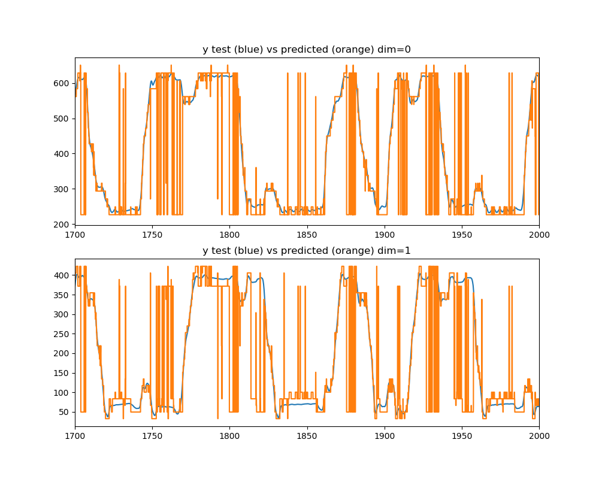
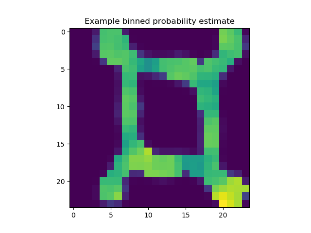

Note
Click here to download the full example code
Decoding position from spike features and cluster information with kde¶
BivariateKDE is used to estimate the probability of the stimulus given each spike of multisignal data reduced to an apparant single signal by combing the signals but separating the data in feature-space by adding a constant that’s a multiple of the signal #.Additionally, cluster information is added as another feature to provide more information.
Including this many spikes (noise included) is very memory intensive and therefore a small section of time is included in the train/test sets, few bins are used, and a subset of features are used. This example should be expanded to do cross-validation manually so that each fold can be saved separately resulting in lower memory consumption.
- 
- 
import numpy as np
import matplotlib.pyplot as plt
from sklearn.preprocessing import MinMaxScaler
from sklearn.pipeline import make_pipeline
from mlneuro.regression import BivariateKernelDensity
from mlneuro.multisignal import multi_to_single_signal
from mlneuro.preprocessing.signals import limit_time_range, remove_unlabeled_spikes, spike_stimulus, separate_signal_features
from mlneuro.preprocessing.stimulus import smooth_stimulus, stimulus_gradient_mask
from mlneuro.filtering import filter_at, TemporalSmoothedFilter
from mlneuro.utils.visuals import n_subplot_grid
from mlneuro.utils.io import load_array_dict
from mlneuro.utils.arrayfuncs import atleast_2d
from mlneuro.crossvalidation import generate_crossvalidator, cross_val_predict
from mlneuro.common.bins import bin_edges_from_data, bin_centers_from_edges, linearized_bin_grid
# Options
# Temporal resolution to filter at, in seconds
RESOLUTION = 0.05
# Number of stimulus bins per dimension
STIMULUS_BINS = 24
# Number of cross-validation folds
N_FOLDS = 3
# Plot the maximum predicted value in each dimension
DISPLAY_PLOTS = True
# The time range to show in the plot (None for auto)
# default is a small range for example plots in documentation
PLOT_X_RANGE = [1700,2000]
# Save the prediction results to a file for later use
# e.g. example_results.mat
SAVE_TO_FILE = None
# Use a GPU for the KDE?
GPU = False
# A subset of a features to use? (list of indices), None uses all
FEATURE_SUBSET = None
# Reduce the amount of time decoded to allow for low-memory systems (use 0, np.inf to not limit)
TIME_START = 1500
TIME_END = 3000
# Load data
from mlneuro.datasets import load_restaurant_row
data = load_restaurant_row()
# Clean up stimulus data
stimulus_times = data['full_stimulus_times']
stimulus_data = data['full_stimulus']
stimulus_data = smooth_stimulus(stimulus_times, stimulus_data)
if FEATURE_SUBSET is None: # Keep all marks
FEATURE_SUBSET = np.arange(data['signal_marks'][0].shape[1])
Ts = data['signal_times']
Xs = [np.hstack([marks[:, FEATURE_SUBSET], atleast_2d(cellids)]) for marks, cellids in zip(data['signal_marks'], data['signal_cellids'])]
ys = spike_stimulus(Ts, stimulus_times, stimulus_data)
# Limit the time range as specified
Ts, (Xs, ys) = limit_time_range(Ts, Xs, ys, time_start=TIME_START, time_end=TIME_END)
# Separate signal features
Xs = separate_signal_features(Xs)
# Drop to a single signal
T, (X, y) = multi_to_single_signal(Ts, Xs, ys)
# Create a mask for the training subset when the stimulus is moving quickly (running)
y_train_mask = stimulus_gradient_mask(T, y, min_g=5, max_g=1000)
# Calculate bin edges independent cross-validation so they are the same for all folds
ybin_edges, ybin_counts = bin_edges_from_data(stimulus_data, STIMULUS_BINS)
# Generaete a bandwidth matrix
bandwidth_features = 0.15
bandwidth_cellids = 0.01
bandwidth_X = bandwidth_X = np.array(([bandwidth_features] * len(FEATURE_SUBSET)) + [bandwidth_cellids], dtype=np.float64)
# Construct the KDE
estimator = BivariateKernelDensity(n_neighbors=30, bandwidth_X=0.13, bandwidth_y=12, ybins=ybin_edges,
tree_backend='auto' if GPU else 'ball', n_jobs=8, logger_level='debug')
# Create a cross-validator object
cv = generate_crossvalidator(estimator, X, y, training_mask=y_train_mask, n_splits=N_FOLDS, limit_training_size=0.35)
# Run the prediction cross-validated and get probabilties
# Notice, `pickle_predictions` is set which will write predictions to disk each fold to make space in memory
# for computations
y_pred = cross_val_predict(estimator, X, y, cv=cv, n_jobs=1, method='predict_proba', pickle_predictions=True)
# Filter the data
filt = TemporalSmoothedFilter(bandwidth_T=2.5*RESOLUTION, std_deviation=10, n_jobs=8)
T_pred, (y_pred, y_test) = filter_at(filt, RESOLUTION, T, y_pred, y)
# Normalize to a probability distribution
y_pred /= np.sum(y_pred, axis=1)[:, np.newaxis]
# Calculate the max-predicted bin
ybin_centers = bin_centers_from_edges(ybin_edges)
ybin_grid = linearized_bin_grid(ybin_centers)
y_predicted = ybin_grid[np.argmax(y_pred, axis=1)]
# Output
if DISPLAY_PLOTS:
fig, axes = n_subplot_grid(y_predicted.shape[1], max_horizontal=1, figsize=(10,8))
for dim, ax in enumerate(axes):
ax.plot(T_pred, y_test[:, dim])
ax.plot(T_pred, y_predicted[:, dim])
if PLOT_X_RANGE is not None: ax.set_xlim(PLOT_X_RANGE)
ax.set_title('y test (blue) vs predicted (orange) dim={}'.format(dim))
fig.show()
plt.figure()
plt.imshow(y_pred[50,:].reshape(STIMULUS_BINS, STIMULUS_BINS))
plt.title('Example binned probability estimate')
plt.show()
if SAVE_TO_FILE is not None:
from mlneuro.utils.io import save_array_dict
save_array_dict(SAVE_TO_FILE,
{'times': T_pred, 'estimates': y_pred.reshape(-1, STIMULUS_BINS, STIMULUS_BINS), 'max_estimate': y_predicted, 'bin_centers': ybin_centers, 'test_stimulus': y_test},
save_type='mat')
Total running time of the script: ( 23 minutes 28.090 seconds)